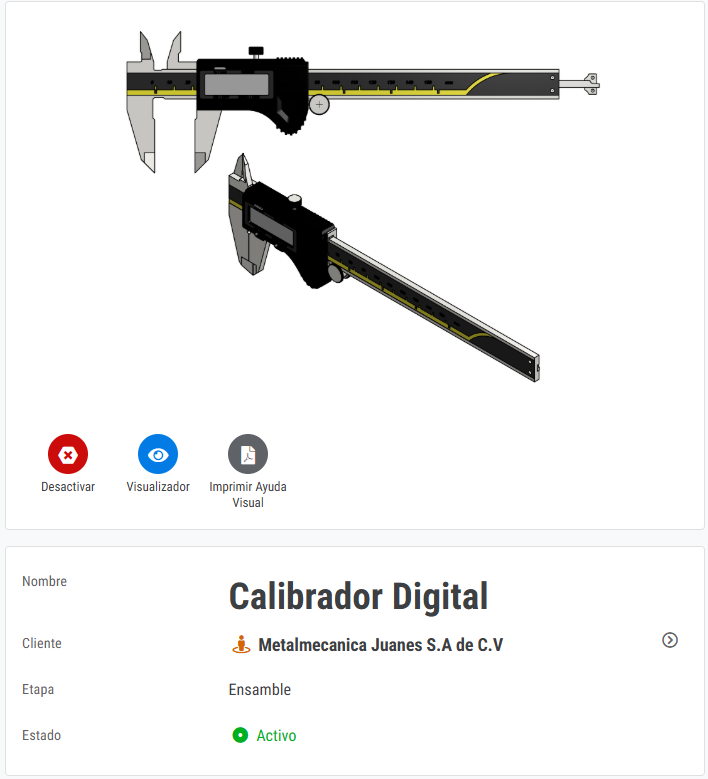
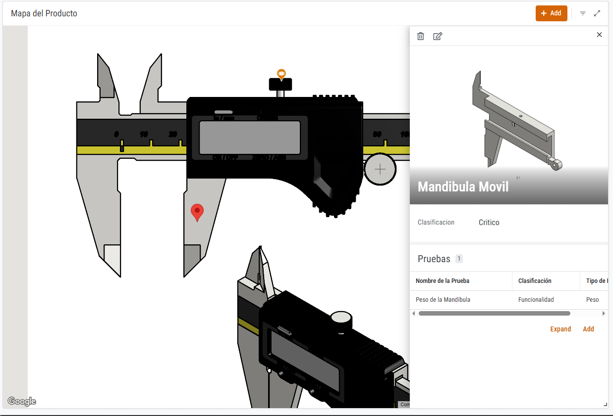
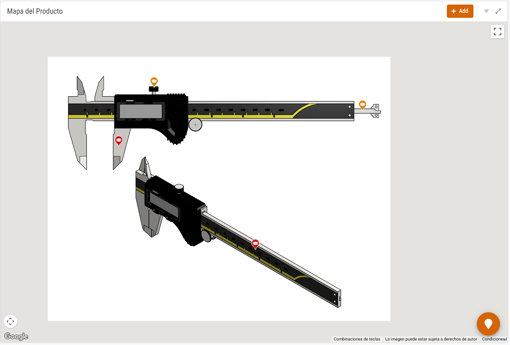
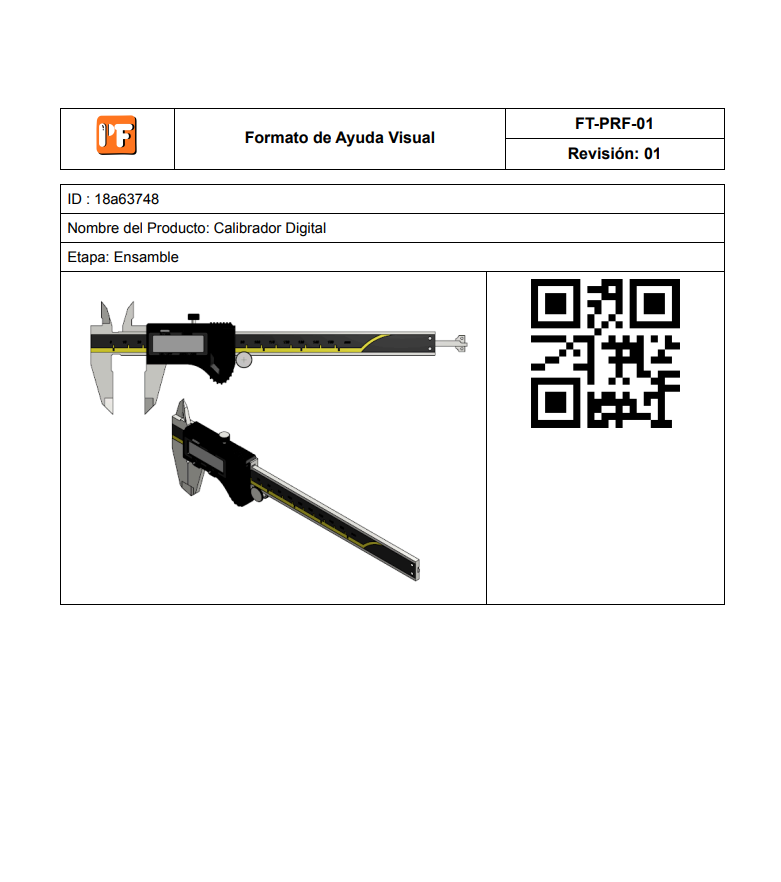

01
Material rezagado
Dificultad para reconocer rápidamente número de parte, proyecto y estado del material.
PartFinder optimiza la búsqueda de números de parte, características, ubicación y componentes asociados mediante una aplicación móvil accesible, integrada con el ecosistema de Google Workspace y códigos QR dinámicos.
Menos dependencia del conocimiento informal y más acceso inmediato a la información.
PartFinder nace para resolver una necesidad real en producción: la acumulación de material sin identificación clara, la dependencia del personal con experiencia y los retrasos provocados por no contar con un sistema rápido y confiable de consulta.
Dificultad para reconocer rápidamente número de parte, proyecto y estado del material.
Los operarios dependen de personas con experiencia para validar información crítica.
La falta de identificación incrementa el riesgo de uso incorrecto, daños y retrabajos.
Se afectan el flujo de producción, la movilidad del área y el cumplimiento de metas UPH.
El proyecto integró vistas, formularios y relaciones para ofrecer una experiencia simple pero funcional en planta.
Formulario para alta, edición y actualización de productos con imagen y datos asociados.
Interfaz amigable al touch para consulta rápida de productos en dispositivos móviles.
Al seleccionar una tarjeta, el usuario accede a la ficha detallada del material o producto.
Asocia componentes a cada producto con clasificación, imagen y coordenadas visuales.
Permite identificar componentes sobre la imagen del producto para mejorar comprensión y localización.
Con un teléfono o tableta, el usuario puede abrir la información del producto directamente desde el código.
Desde la búsqueda del producto hasta la identificación de sus componentes, el proceso es rápido, visual y accesible.

El usuario consulta el producto mediante tarjetas o búsqueda directa.

Se accede a la información completa del producto.

Se identifican piezas directamente sobre la imagen.

Se facilita la identificación del material en planta.